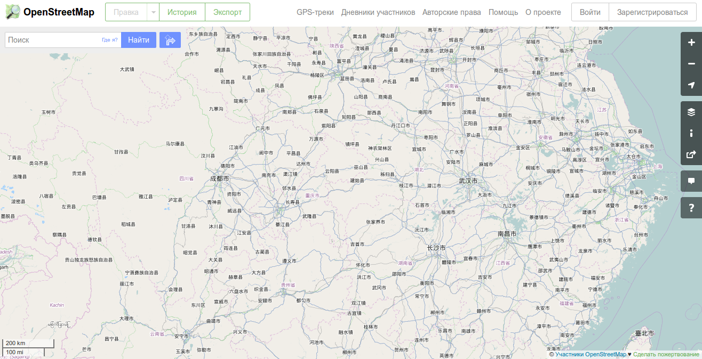
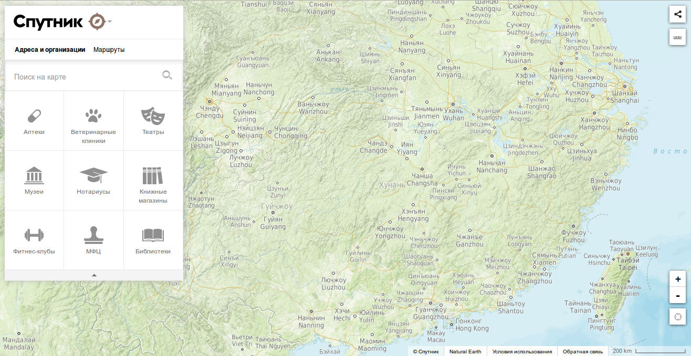
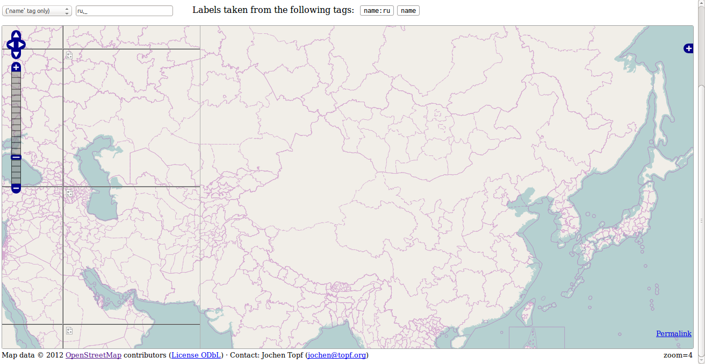
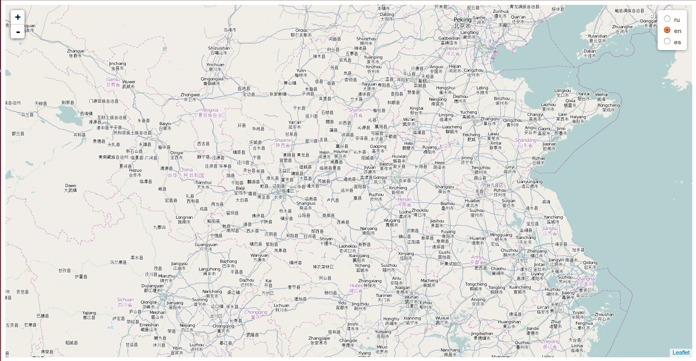
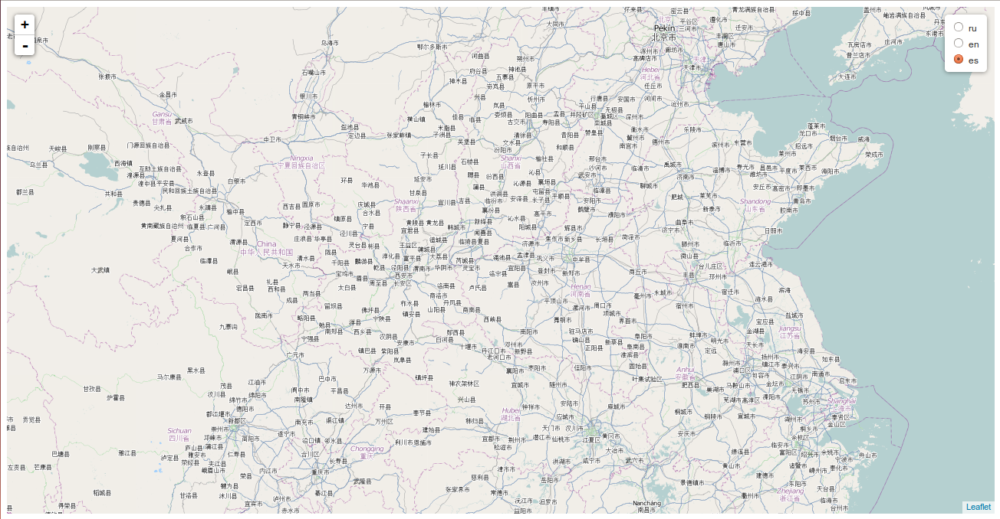

Занимаясь разработкой веб-карт, использующих данные OpenStreetMap, часто возникает вопрос о том, как показывать карты с корректными русскими названиями. Этой проблемы не возникает, если ваши карты показывают исключительно Россию. Однако, если вы посмотрите, например, карту Китая, то вам вряд ли понравится такое обилие иероглифов, а тщетные попытки найти Пекин на такой карте, скорее всего, не увенчаются успехом.

Известно, что свободолюбивый проект OpenStreetMap позволяет сохранять названия географических объектов на разных языках. Для этого используются специальные теги, типа name:ru, name:en или name:es, и что самое главное, они заполняются участниками OpenStreetMap. Конечно, наиболее подробные надписи создают пользователи на том языке, на котором они говорят: в России — на русском, в Китае — на китайском, в африканских странах — на местных языках. Шансов, что какая-то улочка в Нигерии будет иметь русский перевод, мало, но все же основные географические объекты (страны, города, реки и т.п.) имеют переводы. Этой небольшой картографической информации бывает вполне достаточно, чтобы русскоязычный пользователь открыл, например, карту Китая и нашел на ней основные названия. Таким образом, ваш ресурс станет чуть более дружелюбным для пользователя.
Если задаться целью найти толковую инструкцию, как использовать эти теги переводов на собственных веб-картах, то во всем пространстве Рунета или даже Интернета найдется лишь разрозненная информация о разных аспектах вопроса локализации веб-карт OpenStreetMap, но «коробочной» инструкции вы вряд ли найдете. С одной стороны, эта проблема представляет собой не самый сложный архитектурный вопрос, т.к. технология разработана в рамках самого проекта OpenStreetMap. Но с другой стороны, в завершенных проектах локализованных веб-карт, например, в известном Ростелекомовском Спутнике, задача локализации была решена, а проблемы, с которыми столкнулись разработчики и то, как их удалось решить, остаются неозвученными IT-общественности.

Существуют даже проекты веб-карт с поддержкой многоязычности, но они не доведены до логического, дружелюбного пользователю конца.

Данная статья ставит перед собой цель собрать воедино эту разрозненную информацию в виде законченной инструкции по локализации карт OpenStreetMap. В статье приводятся минимальные сведения о развертывании тайлового севера на основе данных OpenStreetMap, т.к. данную тему подробно раскрыли другие публикации на Хабре, на Gis-Lab'е и в других спецпроектах. В рамках данной статьи мы развернем хранилище тайлов (плиток-картинок, из которых «сшивается» изображение веб-карты) по известной инструкции, но не вдаваясь и не уточняя подробности. Возникающие вопросы по поводу развертывания тайлового хранилища ищите в первую очередь в упомянутой инструкции.
Итак, нам потребуются пакеты (со всеми необходимыми зависимостями):
Полноценный тайловый сервер (с Apache httpd, mod_tile и renderd) в целях данный статьи разворачивать не требуется. Но направляющие векторы для развертывания тайлового сервера будут даны ниже, подробную инструкцию вы найдете по вышеперечисленным ссылкам.
1. Получаем векторные данные OpenStreetMap
Эти данные мы будем импортировать (с помощью утилиты osm2pgsql) в базу данных Postgresql, а затем пакет рендеринга Mapnik будет генерировать растровые тайлы.
Итак, скачиваем карту в заданном регионе в формате XML (OSM-файл) или в сжатом бинарном формате PBF с одного из зеркал OpenStreetMap.
Файл планеты можно скачать командами:
wget http://download.bbbike.org/osm/planet/planet-latest.osm.pbf.md5
wget http://download.bbbike.org/osm/planet/planet-latest.osm.pbf
md5sum planet-latest.osm.pbf
Вам следует иметь в виду, что эти данные занимают значительный объем. Например, файл, содержащий векторные данные на всю планету Planet.osm в несжатом формате OSM XML занимает более 1ТБ, в формате XML, сжатом bz2, занимает 41.8ГБ, а в бинарном формате PBF 18.1ГБ. Все эти форматы хранят одни и те же данные. Естественно, если вам необходим только конкретный регион, а не вся планета, то эти цифры будут значительно меньше, но пропорции объемов данных в форматах, OSM XML, OSM XML, сжатом bz2, и в формате PBF, останутся теми же. Вам следует иметь в виду, что перед импортом в Postgresql векторные данные в формате OSM XML, сжатом BZ2, и в бинарном формате PBF будут предварительно обрабатываться (распаковываться, парситься), что увеличит время импорта скачанного файла в базу данных Postgresql. Так, на моей четырехядерной машине Core i5 с 16ГБ ОЗУ, 2ТБ HDD (Ubuntu 14.04 64x) импорт Planet.osm.pbf занял 2 недели. Импорт аналогичного файла Planet.osm.bz2 занял на порядок меньшее время. По моим собственным ощущениям, утилита osm2pgsql требовательна к объему ОЗУ (для оптимального управления памятью почитайте о возможностях ключей --cache и --cache-strategy утилиты osm2pgsql), частоте и количеству ядер процессора (в момент парсинга файла, для управления загрузкой ядер процессора смотрите ключ --number-processes утилиты osm2pgsql), а также к скорости работы жесткого диска (в момент вставки данных и создания индексов в Postgresql, для оптимизации см. ключ --disable-parallel-indexing утилиты osm2pgsql). Если у вас SSD, то импорт данных в базу Postgresql пройдет значительно быстрее.
Мы будем в целях данной статьи использовать регион Китая, т.к. он по умолчанию не русифицирован и имеет относительно небольшой размер, что удобно на этапе отладки технологии. Файлы векторных данных Китая можно скачать с сайта проекта geofabrik.de командой:
wget http://download.geofabrik.de/asia/china-latest.osm.pbf
2. Актуализируем полученные векторные данные OpenStreetMap
Дело в том, что за время, которое прошло с момента упаковки файла данных до момента разворачивания его на вашей машине, на OpenStreetMap могли быть внесены какие-то изменения. Поэтому перед импортом мы актуализируем файл данных командой osmupdate из пакета osmcutils:
osmupdate china-latest.osm.pbf new-china-latest.osm.pbf
Если ваш OSM-файл не содержит отметку времени (timestamp), то скорее всего утилита osmupdate вернет ошибку. В этом случае (если вы знаете timestamp вашего файла — иногда публикуется на странице скачивания файла) надо запустить команду в следующем формате:
osmupdate china-latest.osm.pbf 2015-05-13T14:48:07Z new-china-latest.osm.pbf
Утилита osmupdate самостоятельно скачивает diff-файл и применяет его к файлу, указанному в первом аргументе команды вызова. Не рекомендуется запускать утилиту osmupdate с большими файлами в формате OSM XML (например, planet-latest.osm.bz2), т.к. необходима предварительная обработка файла утилитой osmconvert из того же пакета osmcutils, а утилита osmupdate с полученным конвертированным файлом будет работать нескольких дней. Для больших файлов рекомендуется использовать PBF-формат. Но следует иметь в виду, что импорт такого файла в Postgresql будет занимать большее время, чем импорт файла формата OSM XML. Так сказать, палка о двух концах. Лично я всегда выбираю формат PBF.
3. Сконфигурируем поддержку нужных языков в настройках утилиты osm2pgsql
По умолчанию в файле стилей /usr/share/osm2pgsql/osm2pgsql/default.style не установлена поддержка любых языков. Для надписей на карте используется тег name, который задается в файле /usr/share/osm2pgsql/osm2pgsql/default.style строчкой:
node,way name text linear
Допишем после нее поддержку, например, русского, английского и испанского языков:
node,way name:ru text linear
node,way name:en text linear
node,way name:es text linear
Эти три строчки скажут утилите osm2pgsql импортировать также из файла PBF еще значения тегов name:ru, name:en, name:se. Прочие локализованные имена буду проигнорированы.
4. Создаем базу данных Postgresql для хранения векторных данных OpenStreetMap
Предварительно необходимо настроить trust-аутентификацию (чтобы не вводить пароль, в рамках данной статьиэ то не требуется) и создать необходимых пользователей БД (см. инструкцию). Мы в рамках данной статьи ограничимся trust-аутентификацией и стандартным пользователем postgres. Итак, создаем БД, например, china и подключаем к ней необходимые расширения:
createdb -U postgres china
psql -U postgres -d china -c 'CREATE EXTENSION hstore; CREATE EXTENSION postgis;'
5. Импортируем векторные данные в базу данных Postgresql
Импорт осуществляется утилитой osm2pgsql. Описания ключей утилиты можно найти в справке по утилите. Некоторые поясняющие сведения приводятся на англоязычном ресурсе.
osm2pgsql -s -m -d china -U postgres --drop new-china-latest.osm.pbf
Ключ --drop позволяет сократить занимаемое базой данных дисковое пространство, жертвуя тем самым возможностью впоследствии обновлять данные в БД из свежих файлов PBF или OSM XML. В случае Китая объем базы данных уменьшился с около 500МБ до 92МБ. Чтобы посмотреть какой размер занимает база данных, введите команду в консоли psql, подключенной к любой существующей БД:
SELECT pg_size_pretty( pg_database_size( 'china' ) );
6. Создаем представления в БД для отображения переведенных географических названий.
Воспользовавшись инструкцией создадим несколько представлений SQL. Для генерации «русских» тайлов (тайлов, содержащих русские подписи) будем использовать префикс china_ru, для генерации «английских» тайлов — china_en, для генерации «испанских» тайлов — china_es. Приведем ниже SQL скрипт создания SQL-представлений для генерации только «русских» тайлов. С SQL-представлениями для генерации «английских» и «испанских» тайлов уважаемый читатель, думаю, разберется сам, взяв за основу «русские» VIEW.
CREATE VIEW china_ru_point AS SELECT
data.osm_id, data.access, data."addr:housename", data."addr:housenumber", data."addr:interpolation",
data.admin_level, data.aerialway, data.aeroway, data.amenity, data.area, data.barrier, data.bicycle,
data.brand, data.bridge, data.boundary, data.building, data.capital, data.construction, data.covered,
data.culvert, data.cutting, data.denomination, data.disused, data.ele, data.embankment, data.foot,
data."generator:source", data.harbour, data.highway, data.historic, data.horse, data.intermittent,
data.junction, data.landuse, data.layer, data.leisure, data.lock, data.man_made, data.military,
data.motorcar,
CASE data."name:ru" IS NULL
WHEN true THEN ''
ELSE data."name:ru" ||
CASE data.name IS NULL
WHEN true THEN ''
ELSE E'\n'
END
END ||
CASE data.name IS NULL
WHEN true THEN ''
ELSE data.name
END
AS name,
data."natural", data.office, data.oneway, data.operator, data.place, data.poi, data.population, data.power,
data.power_source, data.public_transport, data.railway, data.ref, data.religion, data.route, data.service,
data.shop, data.sport, data.surface, data.toll, data.tourism, data."tower:type", data.tunnel, data.water,
data.waterway, data.wetland, data.width, data.wood, data.z_order, data.way FROM planet_osm_point AS data;
CREATE VIEW china_ru_line AS SELECT
data.osm_id, data.access, data."addr:housename", data."addr:housenumber", data."addr:interpolation",
data.admin_level, data.aerialway, data.aeroway, data.amenity, data.area, data.barrier, data.bicycle,
data.brand, data.bridge, data.boundary, data.building, data.construction, data.covered, data.culvert,
data.cutting, data.denomination, data.disused, data.embankment, data.foot, data."generator:source",
data.harbour, data.highway, data.historic, data.horse, data.intermittent, data.junction,
data.landuse, data.layer, data.leisure, data.lock, data.man_made, data.military, data.motorcar,
CASE data."name:ru" IS NULL
WHEN true THEN ''
ELSE data."name:ru" ||
CASE data.name IS NULL
WHEN true THEN ''
ELSE E'\n'
END
END ||
CASE data.name IS NULL
WHEN true THEN ''
ELSE data.name
END
AS name,
data."natural", data.office, data.oneway, data.operator, data.place, data.population, data.power,
data.power_source, data.public_transport, data.railway, data.ref, data.religion, data.route, data.service,
data.shop, data.sport, data.surface, data.toll, data.tourism, data."tower:type", data.tracktype, data.tunnel,
data.water, data.waterway, data.wetland, data.width, data.wood, data.z_order, data.way
FROM planet_osm_line AS data;
CREATE VIEW china_ru_polygon AS SELECT
data.osm_id, data.access, data."addr:housename", data."addr:housenumber", data."addr:interpolation",
data.admin_level, data.aerialway, data.aeroway, data.amenity, data.area, data.barrier, data.bicycle, data.brand,
data.bridge, data.boundary, data.building, data.construction, data.covered, data.culvert, data.cutting,
data.denomination, data.disused, data.embankment, data.foot, data."generator:source", data.harbour,
data.highway, data.historic, data.horse, data.intermittent, data.junction, data.landuse, data.layer,
data.leisure, data.lock, data.man_made, data.military, data.motorcar,
CASE data."name:ru" IS NULL
WHEN true THEN ''
ELSE data."name:ru" ||
CASE data.name IS NULL
WHEN true THEN ''
ELSE E'\n'
END
END ||
CASE data.name IS NULL
WHEN true THEN ''
ELSE data.name
END
AS name,
data."natural", data.office, data.oneway, data.operator, data.place, data.population, data.power,
data.power_source, data.public_transport, data.railway, data.ref, data.religion, data.route, data.service,
data.shop, data.sport, data.surface, data.toll, data.tourism, data."tower:type", data.tunnel, data.water,
data.waterway, data.wetland, data.width, data.wood, data.z_order, data.way, data.way_area
FROM planet_osm_polygon AS data;
CREATE VIEW china_ru_roads AS SELECT
data.osm_id, data.access, data."addr:housename", data."addr:housenumber", data."addr:interpolation",
data.admin_level, data.aerialway, data.aeroway, data.amenity, data.area, data.barrier, data.bicycle, data.brand,
data.bridge, data.boundary, data.building, data.construction, data.covered, data.culvert, data.cutting,
data.denomination, data.disused, data.embankment, data.foot, data."generator:source", data.harbour,
data.highway, data.historic, data.horse, data.intermittent, data.junction, data.landuse, data.layer,
data.leisure, data.lock, data.man_made, data.military, data.motorcar,
CASE data."name:ru" IS NULL
WHEN true THEN ''
ELSE data."name:ru" ||
CASE data.name IS NULL
WHEN true THEN ''
ELSE E'\n'
END
END ||
CASE data.name IS NULL
WHEN true THEN ''
ELSE data.name
END
AS name,
data."natural", data.office, data.oneway, data.operator, data.place, data.population, data.power,
data.power_source, data.public_transport, data.railway, data.ref, data.religion, data.route, data.service,
data.shop, data.sport, data.surface, data.toll, data.tourism, data."tower:type", data.tunnel, data.water,
data.waterway, data.wetland, data.width, data.wood, data.z_order, data.way
FROM planet_osm_roads AS data;
INSERT INTO geometry_columns VALUES ('', 'public', 'china_ru_point', 'way', 2, 900913, 'POINT');
INSERT INTO geometry_columns VALUES ('', 'public', 'china_ru_line', 'way', 2, 900913, 'LINESTRING');
INSERT INTO geometry_columns VALUES ('', 'public', 'china_ru_polygon', 'way', 2, 900913, 'POLYGON');
INSERT INTO geometry_columns VALUES ('', 'public', 'china_ru_roads', 'way', 2, 900913, 'LINESTRING');
В данном случае мы создадим подписи на карте в формате «name:ru\nname», где E'\n' — как известно, символ перевода каретки на новую строку. Для более изощренного размещения подписей на карте читайте документацию по TextSymbolizer Mapnik'а. В этом случае вам потребуется изменить стили отображения подписей на карте, генерируемые согласно настоящей инструкции в следующем пункте.
7. Устанавливаем скрипты от OpenStreetMap для генерации тайлов
Пусть для хранения всех необходимых скриптов Mapnik'а мы выбрали директорию /home/osm/mapnik. Выкачаем в нее скрипты от OpenStreetMap для генерации тайлов, выкачаем туда же шейпы (shape-файлы) мира, используемые для упрощения генерации тайлов на мелких маштабах, и создадим XML файлы стилей Mapnik'а для присоединения к БД:
svn co http://svn.openstreetmap.org/applications/rendering/mapnik /home/osm/mapnik
/home/osm/mapnik/get-coastlines.sh
Далее нам потребуется создать 3 файла стилей рендеринга тайлов, соответственно, для русских, английских и испанских подписей географических объектов. Для этого установим специальную переменную системного окружения MAPNIK_PREFIX, которая позволяет установить префикс таблиц векторных данных в базе данных Postgres и которую прочитает скрипт /home/osm/mapnik/generate_xml.py и подставит в псевдо-запросы к БД.
export MAPNIK_PREFIX='china_ru'
/home/osm/mapnik/generate_xml.py /home/osm/mapnik/osm.xml china_ru.xml --dbname china --user postgres --accept-none
export MAPNIK_PREFIX='china_en'
/home/osm/mapnik/generate_xml.py /home/osm/mapnik/osm.xml china_en.xml --dbname china --user postgres --accept-none
export MAPNIK_PREFIX='china_es'
/home/osm/mapnik/generate_xml.py /home/osm/mapnik/osm.xml china_es.xml --dbname china --user postgres --accept-none
Эти команды создадут 3 специальных стиля для рендеринга тайлов, позволяющих считывать данные для рендеринга из нужных нам представлений русского, английского или испанского языков.
8. Обозначим в скрипте генерации тайлов область Китая для генерации тайлов
Находим в скрипте /home/osm/mapnik/generate_tiles_multiprocess.py такие строки:
bbox = (-180.0,-90.0, 180.0,90.0) # контекст карты для генерации тайлов на весь земной шар
render_tiles(bbox, mapfile, tile_dir, 0, 5, "World") # команда рендеринга тайлов с 0-го по 5-ый масштаб
После этих строк напишем:
bbox = (85.0,19.7,132.5,40.8) # контекст карты для генерации тайлов Китая
render_tiles(bbox, mapfile, tile_dir, 6, 15, "China") # команда рендеринга тайлов с 6-го по 15-ый масштаб
exit()
Это позволит сгенерировать тайлы Китая с 6-го по 15-ый масштаб содержащие подписи на необходимом нам языке. Инструкция exit() позволяет отказаться от дальнейшего рендеринга областей, прописанных по умолчанию в скрипте /home/osm/mapnik/generate_tiles_multiprocess.py (Muenchen, Muenchen+, Muenchen++, Nuernberg, Karlsruhe, Karlsruhe+, Augsburg, Augsburg+, Europe+). Существует еще скрипт /home/osm/mapnik/generate_tiles.py, который запускает процесс рендеринга в одном потоке. Но мы его не будем использовать, т.к. при наличии нескольких ядер процессора скрипт /home/osm/mapnik/generate_tiles_multiprocess.py в общем случае отработает быстрее.
9. Сгенерируем тайлы для выбранных локализаций
Нам необходимо создать директории, куда Mapnik будет складывать сгенерированные тайлы:
mkdir /home/osm/mapnik/tiles
mkdir /home/osm/mapnik/tiles/ru
mkdir /home/osm/mapnik/tiles/en
mkdir /home/osm/mapnik/tiles/es
Генерацию тайлов мы должны запустить трижды, меняя значения переменных системного окружения MAPNIK_MAP_FILE и MAPNIK_TILE_DIR. Скрипт прочитает эти переменные и передаст их Mapnik'у для настройки рендеринга тайлов:
export MAPNIK_MAP_FILE=/home/osm/mapnik/china_ru.xml
export MAPNIK_TILE_DIR=/home/osm/mapnik/tiles/ru/
exec python /home/osm/mapnik/generate_tiles_multiprocess.py
export MAPNIK_MAP_FILE=/home/osm/mapnik/china_en.xml
export MAPNIK_TILE_DIR=/home/osm/mapnik/tiles/en/
exec python /home/osm/mapnik/generate_tiles_multiprocess.py
export MAPNIK_MAP_FILE=/home/osm/mapnik/china_es.xml
export MAPNIK_TILE_DIR=/home/osm/mapnik/tiles/es/
exec python /home/osm/mapnik/generate_tiles_multiprocess.py
Тайлы сгенерированы.
10. Отобразим тайлы на веб-карте
Для этого создадим простейшую html-страничку, в которой подключим созданные тайловые хранилища. Файл страницы следует положить рядом с директорией сгенерированных тайлов /home/osm/mapnik/tiles. Для отображения веб-карт будем использовать javascript-фреймворк LeafletJS:
<!DOCTYPE html>
<html>
<head>
<meta http-equiv="Content-Type" content="text/html; charset=UTF-8">
<meta name="viewport" content="width=device-width, initial-scale=1.0, maximum-scale=1.0, user-scalable=no">
<link rel="stylesheet" href="http://cdn.leafletjs.com/leaflet-0.7.3/leaflet.css" />
<script src="http://cdn.leafletjs.com/leaflet-0.7.3/leaflet.js"></script>
</head>
<body>
<div id="map" style="height: calc(100vh - 15px)"></div>
<script>
var map = L.map('map', {
center: [34.7, 111.7],
zoom: 6
});
L.control.layers({
"ru" : L.tileLayer('tiles/ru/{z}/{x}/{y}.png').addTo(map),
"en" : L.tileLayer('tiles/en/{z}/{x}/{y}.png'),
"es" : L.tileLayer('tiles/es/{z}/{x}/{y}.png')
}, null).addTo(map);
</script>
</body>
</html>
Эта страничка будет выполняться локально. В правом верхнем углу должен быть доступен контрол, позволяющий выбрать источник тайлов. Русская, английская и испанская версии карт будет выглядеть следующим образом:


11. Рендеринг тайлов «на лету»
Вам потребуется настроить несколько модулей mod_tile веб-сервера Apache, каждый из которых будет ответственен за свой маппинг — /ru — за рендеринг русских тайлов, /en — за рендеринг, соответственно, английских тайлов и так далее. Подробности настройки mod_tile, httpd и renderd читайте в инструкции от Gis-Lab'а. В рамках демонстрации примера локализации карт OpenStreetMap не считаю нужным разворачивать полноценный тайловый сервер.
Примечания
Выводы
Проблема локализации карт OpenStreetMap не представляет большой трудности. Существует несколько подходов к решению этой задачи. В данной статье предложен вполне конкретный рабочий вариант. Уверен, у уважаемого читателя найдется немало вопросов по содержанию данной статьи, появятся собственные идеи для ветвления предложенного алгоритма. Автор статьи не претендует на единственно верную методу решения проблемы русификации/локализации карт OpenStreetMap и с удовольствием прочитает о ваших «хитростях» в решении данного вопроса.